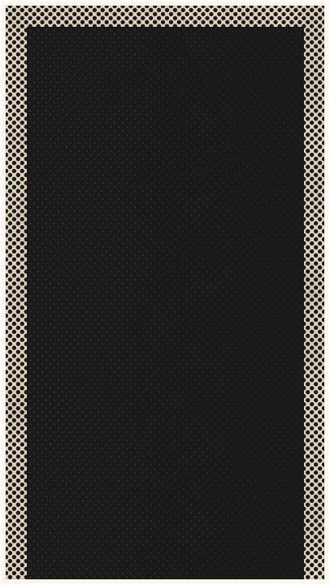
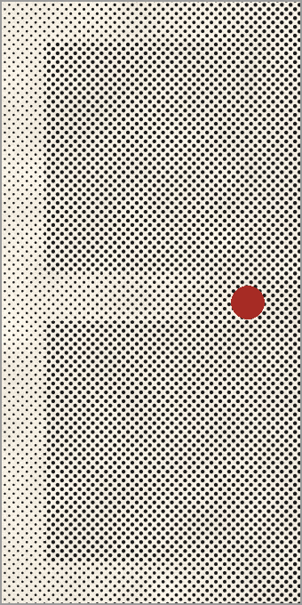
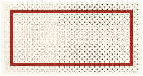
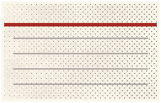

JÁ OUVIU
QUE ALI NÃO ATENDE
borderline?



ANTES DE MARCAR,
pergunte

1
Quantas pessoas com borderline você já atendeu?
2
Que tipo de psicoterapia você usa para borderline?
3
O que fazemos se eu entrar em crise entre as consultas?
MANDA PRA QUEM ESTÁ PROCURANDO
Dr. Fabio Schmidt, médico, CRM-SP 183549
Conteúdo educativo, não substitui consulta.